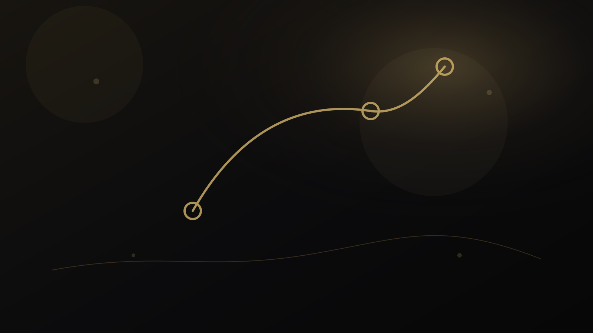

راهنمای دانشآموز و خانواده
بعد از اعلام نتایج کنکور چه کنیم؟ نقشه تصمیمگیری مرحلهبهمرحله
لحظه اعلام نتیجه معمولاً با هیجان، نگرانی و حجم زیادی از توصیه همراه است. بهترین کار این است که تصمیم را به چند مرحله جدا تقسیم کنیم تا اطلاعات رسمی، ترجیح فردی و محدودیتهای عملی با هم قاطی نشوند.

بعد از نتایج کنکور را از خود مسئله شروع کنیم
لحظه اعلام نتیجه معمولاً با هیجان، نگرانی و حجم زیادی از توصیه همراه است. بهترین کار این است که تصمیم را به چند مرحله جدا تقسیم کنیم تا اطلاعات رسمی، ترجیح فردی و محدودیتهای عملی با هم قاطی نشوند.
در این راهنما هدف ارائه نسخه آماده نیست. مسئله به اجزای کوچکتر تقسیم میشود تا معلوم باشد چه اطلاعاتی داریم، چه چیزی هنوز نامطمئن است و کدام نتیجه واقعاً از شواهد پشتیبانی میشود. این شیوه هم برای تصمیم انسانی مفیدتر است و هم از تبدیل یک شاخص یا یک تجربه به حکم کلی جلوگیری میکند.
پنج لایهای که در بعد از نتایج کنکور باید جداگانه دیده شوند
۱. خواندن کارنامه
ابتدا باید دادههای کارنامه و معنای هر بخش را درست فهمید.
۲. کنترل منبع رسمی
زمانبندی، ظرفیت و ضوابط همان سال باید از مرجع رسمی بررسی شود.
۳. ساخت فهرست اولیه
گزینههای ممکن بدون قضاوت زودهنگام جمع میشوند.
۴. مقایسه و حذف
گزینههایی که با ترجیح یا محدودیتهای واقعی ناسازگارند کنار میروند.
۵. ثبت و بازبینی
پیش از ثبت نهایی، ترتیب انتخابها و اطلاعات واردشده دوباره کنترل میشوند.
اهمیت این تفکیک در آن است که دو مورد میتوانند همزمان درست باشند اما پیام یکسانی نداشته باشند. به همین دلیل، بهتر است پیش از جمعبندی، برای هر لایه مشخص کنیم «شاهد چیست؟»، «حد تفسیر کجاست؟» و «چه اطلاعاتی ممکن است نتیجه را تغییر دهد؟»
خطاهای رایج؛ چه چیزهایی کیفیت تصمیم را پایین میآورند؟
۱. تصمیم در چند ساعت اول تحت فشار هیجان
این خطا معمولاً بخشی از اطلاعات را بیش از اندازه پررنگ میکند و امکان دیدن تصویر کامل را کاهش میدهد. راه بهتر این است که ادعا یا تصمیم به شواهد مشخص و محدودیتهای همان شواهد متصل شود.
۲. تکیه بر شایعات کانالها به جای منبع رسمی
این خطا معمولاً بخشی از اطلاعات را بیش از اندازه پررنگ میکند و امکان دیدن تصویر کامل را کاهش میدهد. راه بهتر این است که ادعا یا تصمیم به شواهد مشخص و محدودیتهای همان شواهد متصل شود.
۳. تمرکز فقط بر «قبولی» و نه کیفیت انتخاب
این خطا معمولاً بخشی از اطلاعات را بیش از اندازه پررنگ میکند و امکان دیدن تصویر کامل را کاهش میدهد. راه بهتر این است که ادعا یا تصمیم به شواهد مشخص و محدودیتهای همان شواهد متصل شود.
خطاهای بالا معمولاً از میل طبیعی ما به سادهکردن یک مسئله پیچیده میآیند. سادهسازی لازم است، اما نباید اطلاعاتی را حذف کند که اگر دیده میشدند، تصمیم یا تفسیر تغییر میکرد.
یک مسیر عملی برای حرکت از سؤال به اقدام
این مسیر عمداً مرحلهای است. اگر در یکی از مراحل شواهد کافی وجود ندارد، بهتر است همانجا توقف کنیم و اطلاعات تازه جمع کنیم تا اینکه با قطعیت ظاهری به مرحله بعد برویم.
چه زمانی کمک حرفهای معنا دارد؟
اگر مسئله به اطلاعات فردی، پرونده خصوصی، تحلیل تخصصی یا قضاوتی وابسته است که با مطالعه عمومی حل نمیشود، استفاده از خدمت حرفهای میتواند منطقی باشد. در مقابل، اگر پرسش عمومی است، مطالعه راهنماها و منابع رسمی باید نقطه شروع باقی بماند.
ضوابط سالانه ممکن است تغییر کند و باید در همان سال از منبع رسمی کنترل شود.
پرسشهای متداول درباره بعد از نتایج کنکور
بعد از نتایج کنکور دقیقاً چه مسئلهای را حل میکند؟
این موضوع زمانی مفید است که به یک پرسش یا تصمیم مشخص متصل شود. لحظه اعلام نتیجه معمولاً با هیجان، نگرانی و حجم زیادی از توصیه همراه است. بهترین کار این است که تصمیم را به چند مرحله جدا تقسیم کنیم تا اطلاعات رسمی، ترجیح فردی و محدودیتهای عملی با هم قاطی نشوند.
مهمترین خطا در بعد از نتایج کنکور چیست؟
یکی از خطاهای رایج، تصمیم در چند ساعت اول تحت فشار هیجان است. کیفیت تصمیم زمانی بالاتر میرود که شواهد، محدودیتها و هدف استفاده از نتیجه روشن باشند.
چه زمانی کمک حرفهای برای بعد از نتایج کنکور معنا دارد؟
وقتی پاسخ به اطلاعات فردی، قضاوت تخصصی یا بررسی پرونده وابسته است و راهنمای عمومی برای تصمیم کافی نیست. ضوابط سالانه ممکن است تغییر کند و باید در همان سال از منبع رسمی کنترل شود.
جمعبندی
بعد از نتایج کنکور زمانی بیشترین ارزش را دارد که مسئله، شواهد، محدودیت و اقدام بعدی از هم جدا باشند. نتیجه خوب لزوماً نتیجه قطعی نیست؛ نتیجهای است که بتوان توضیح داد چرا با اطلاعات فعلی قابل دفاع است و چه چیزی ممکن است در آینده آن را تغییر دهد.